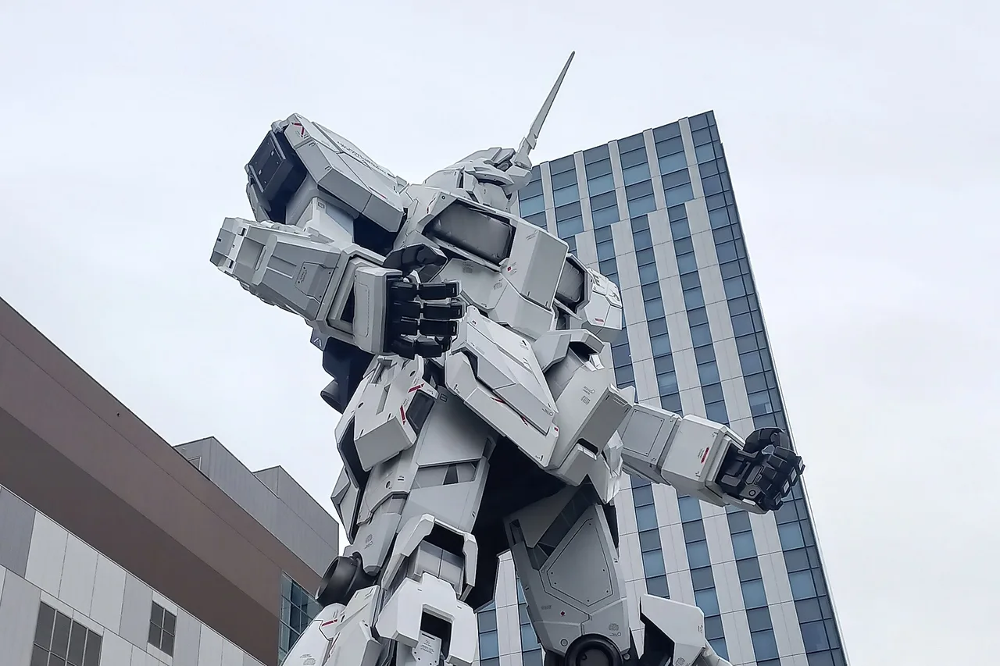

Best Gunpla starter kits for beginners: Entry Grade vs HG vs RG
Maybe you stood under the life-size Unicorn Gundam in Odaiba, or hunted down the painted Gundam manhole covers scattered across Japan, and came home thinking: I want to build one of these myself. Good news — Gunpla (Gundam plastic models) is one of the most beginner-friendly hobbies Japan exports. Kits snap together without glue, and the newest ones don't even need tools. The catch is the grade system: Entry Grade, HG, RG and more, all often depicting the same robot at the same scale. This guide untangles what the grades actually mean, which RX-78-2 to build first, and what to skip until later. It's an editorial comparison built on manufacturer specs and long-running public user feedback — every kit below has a real downside, and we say what it is.

How to choose: three things that actually matter
1. Grade decides difficulty, not size. Entry Grade (EG), High Grade (HG) and Real Grade (RG) are all typically 1/144 scale — around 13 cm tall — but they are completely different builds. EG is engineered so a first-timer can finish in a single sitting; HG is the classic hobby experience with more parts and more posing; RG packs an absurd amount of engineering into the same small frame and demands patience. Bigger numbers of parts mean more detail and more ways to get frustrated. Start lower than your ego suggests.
2. Tools: you need less than you think, but be honest about nippers. No modern Gunpla kit needs glue or paint — parts snap together and come pre-colored. The Entry Grade line goes further: its parts are designed to twist off the runner cleanly by hand, so you genuinely can build one with zero tools. For HG and RG, though, a pair of hobby nippers is strongly recommended — cutting parts free by hand or with scissors leaves ugly white stress marks on the plastic. An entry-level nipper is inexpensive and lasts years; budget for one the moment you step past Entry Grade.
3. Buy one kit, not a stack. The RX-78-2 — the original 1979 Gundam — exists in every grade, which makes it the perfect ladder: build it in Entry Grade, and if the hobby hooks you, build the same robot again in HG or RG and feel exactly what each grade adds. Resist the urge to order three kits on day one; unbuilt-backlog jokes are a whole genre in this hobby for a reason.
The grades at a glance
| Grade | Scale | Nippers | Color accuracy out of the box | Parts & time (relative) | Best for… |
|---|---|---|---|---|---|
| Entry Grade (EG)エントリーグレード | 1/144 | Not required — parts twist off by hand | Fully color-separated plastic, little to no sticker work | Fewest parts · roughly an evening | First kit ever, kids, gifts |
| High Grade (HG)ハイグレード | Mostly 1/144 | Strongly recommended | Good, with foil stickers for small details | Moderate · an afternoon or two | The standard hobby experience |
| Real Grade (RG)リアルグレード | 1/144 | Required in practice — parts are tiny | Excellent, plus a large sheet of realistic decals | Highest at this scale · multiple sessions | Patient builders who want maximum detail |
There are more grades above and beside these — MG and PG at larger scales, SD for the chibi style — but EG, HG and RG are where beginners should be looking, so they're what this guide compares.
At a glance: the five picks
| Kit | Grade | Tools needed | Best for… | Find it |
|---|---|---|---|---|
| Bandai Entry Grade RX-78-2 Gundamエントリーグレード ガンダム | EG 1/144 | None | The single best first kit | Check price → |
| Bandai Entry Grade RX-78-2 Full Weapons Setフルウェポンセット | EG 1/144 | None | Same easy build, more armament | Check price → |
| Bandai HGUC RX-78-2 Gundam ReviveHGUC リバイブ | HG 1/144 | Nippers | The classic step-up build | Check price → |
| Bandai RG RX-78-2 Gundamリアルグレード | RG 1/144 | Nippers (+ patience) | Maximum detail at 1/144 | Check price → |
| Mr. Hobby GMS105 Gundam Marker Basic Setガンダムマーカー ベーシックセット | Accessory | — | Easy detail touch-ups, no airbrush | Check price → |
The "Check price" links are affiliate links (Amazon). We may earn a small commission at no extra cost to you, and it never changes what we recommend.
The kits, honestly reviewed
Bandai Entry Grade RX-78-2 Gundam — the best first Gunpla, full stop
Bandai relaunched its Entry Grade line worldwide in 2020, re-engineered specifically to remove every barrier between a curious beginner and a finished Gundam, and the RX-78-2 is its flagship. Parts are engineered to twist cleanly off the runner by hand — no nippers, no glue, no paint — and the color separation is done entirely in molded plastic, so the finished robot matches the anime colors with little to no sticker work. Despite the simplicity, it poses better than plenty of older, more expensive kits, and public reviews are consistently glowing precisely because expectations get exceeded. The honest limits: the standard release keeps armament light (beam rifle and shield), some surfaces are simpler than higher grades, and experienced builders will finish it quickly and want more. That's not a flaw for its audience — it's the design brief.
✔ Genuinely tool-free — build it at the kitchen table tonight · full color separation in plastic · surprisingly good articulation for the grade
✘ Light on weapons in the standard release · simpler surface detail than HG/RG · fast builders will be done in an evening
Best for: absolute first-timers, younger builders, and anyone who wants a guaranteed win before deciding if the hobby sticks. Skip it if: you've built plastic models before and know you want a meatier project — go straight to HG.
Bandai Entry Grade RX-78-2 Full Weapons Set — same easy build, fuller arsenal
This is the same tool-free Entry Grade Gundam, bundled with an expanded weapons loadout — hyper bazooka, beam javelin, Gundam hammer and beam sabers on top of the rifle and shield — so the finished kit displays with far more variety. If part of the appeal is recreating scenes from the original series, or you're buying for someone who will want to pose and re-pose the thing, the extra armament earns its keep. The honest caveat: the robot itself is identical to the standard release, so you're paying more for accessories, and the extra weapons are the point rather than any upgrade to the build. Check both listings and current prices on Amazon before choosing, since availability of the two versions swings around.
✔ Identical beginner-proof build · noticeably better display and posing options · strong pick as a gift
✘ Same robot as the standard EG — the premium is all in the accessories · weapons add small parts that dilute the "zero fiddliness" promise slightly
Best for: gift-buyers and first-timers who know they'll want the bazooka on the shelf. Skip it if: you just want the cheapest possible way to test the hobby — the standard release does that.
Bandai HGUC RX-78-2 Gundam Revive — the classic step-up
High Grade is where most of the hobby lives, and the "Revive" version of the RX-78-2 — Bandai's 2015 modernization of its most famous kit — is the textbook second build. More parts than Entry Grade, polycap joints, wider articulation, and the full classic loadout including beam sabers. This is where you learn the real workflow: nipping parts off runners, cleaning gates, applying the small foil stickers for eyes and sensors. The honest downsides are typical of HG: a few colors rely on stickers or paint to be fully accurate (the head vulcans, for instance), the surface detail is clean but plain compared to RG, and unlike Entry Grade you really do want nippers — twisting HG parts off by hand risks white stress marks on visible edges.
✔ The definitive "real Gunpla experience" without the difficulty spike · great articulation for dynamic poses · huge community of build guides for exactly this kit
✘ Nippers effectively required · foil stickers and small painted details needed for full color accuracy · plainer surface detail than RG
Best for: your second kit, or a confident first kit if you've built models before. Skip it if: you want zero tool investment — stay with Entry Grade one more build.
Bandai RG RX-78-2 Gundam — maximum detail, maximum honesty required
Real Grade asks a fascinating question: how much Master Grade engineering can fit in a 1/144 body? The RG RX-78-2 — the kit that launched the line in 2010 — answers with an inner skeletal frame, multi-tone color separation across nearly every armor panel, and a large sheet of realistic decals. Finished and decaled, it makes the other kits on this page look like toys. Now the honesty: this is not a beginner kit. The parts are tiny, the pre-assembled inner frame is delicate and punishes rough handling, and long-running user feedback consistently flags loose or fragile joints on this first-generation RG compared to later releases. Bandai has since released a Version 2.0 of the RG RX-78-2 with updated engineering, so check which release a listing actually is before buying. As a third kit, this one is a joy; as a first kit, it's how people quit.
✔ Astonishing detail and color separation at 1/144 · inner frame and realistic decals · the "wow" kit on any shelf
✘ Tiny parts and a delicate frame — genuinely frustrating for first-timers · first-gen RG joints draw long-running complaints · a newer Ver. 2.0 exists, so check which release you're ordering
Best for: patient builders with an EG or HG already behind them who want the deep end. Skip it if: this would be your first kit — the failure mode is real, and Entry Grade exists precisely to prevent it.
Mr. Hobby GMS105 Gundam Marker Basic Set — the no-airbrush finishing kit
Gundam Markers are the hobby's answer to "I want my kit to look better, but I am not buying an airbrush." The GMS105 Basic Set bundles the most-reached-for colors in paint-pen form, so you can touch up details a snap-fit kit leaves in the wrong color — head vulcans, saber hilts, small mechanical details — with no thinner, no brushes and no cleanup beyond capping the pen. It's the single easiest upgrade to how a straight-built kit looks. Be clear about the limits: markers are for details, not for painting whole armor panels, where they leave visible streaks; color match to the molded plastic is close rather than perfect; and while the set does include one gray panel-line pen (brush type), the ultra-fine and flow-in panel-lining markers many guides rave about are a separate product line. Check the listing for exact contents before ordering.
✔ Easiest possible entry to detailing · no airbrush, thinner or cleanup · one set covers many kits' worth of touch-ups
✘ Details only — streaky on large surfaces · ultra-fine panel-lining pens are a separate line (the included panel-line pen is brush-type) · color match to bare plastic is approximate
Best for: anyone one or two kits in who wants a visible step up in finish, and as the add-on that turns a single kit into a great gift. Skip it if: you haven't built anything yet — finish your first kit bare and see if you even feel the itch.
The verdict: one pick per person
- Never built anything before: Entry Grade RX-78-2 — tool-free, color-accurate, finished tonight.
- First-timer who wants the full arsenal (or you're gift-buying): Entry Grade Full Weapons Set.
- Second kit, or experienced modeler's first Gunpla: HGUC RX-78-2 Revive — plus a cheap pair of nippers.
- Patient detail-lover with a build or two done: RG RX-78-2 — and check whether the listing is the original or Ver. 2.0.
- Already hooked and want kits to look sharper: the Gundam Marker Basic Set.
Gunpla as a gift for Gundam fans
Gunpla makes an unusually safe gift, because the entry point is cheap, the box art does half the presentation work, and the recipient gets an evening of hands-on building rather than another object. Two honest rules. First, if you don't know the person's building experience, give Entry Grade — the Full Weapons Set is the best-looking box of the two — because an RG given to a novice is a beautiful way to frustrate someone. Second, if they already build, don't guess at kits they may own; the marker set above is the safer add-on, since detailing supplies are always consumed and never duplicated badly. For the Gundam fan who has everything plastic, consider a different direction entirely: a trip plan. Japan's Gundam manhole covers and the broader world of character manholes make a genuinely fun free hunt across the country, and our anime pilgrimage guide covers the real-world locations behind the shows. A kit under the tree plus a pilgrimage bookmark is a better one-two than a second kit.
Plenty of Gunpla — P-Bandai web-exclusive releases, event colorways, and new kits at Japanese retail prices — never reaches amazon.com, or arrives with heavy markup. A proxy-buying service ships them worldwide from Japan — see how to buy from Japan with Buyee vs ZenMarket →.
The Japanese you'll meet on the box
| Japanese | Reading | Meaning |
|---|---|---|
| ガンプラ | ganpura | Gunpla — Gundam plastic models |
| ランナー | rannā | runner — the plastic frame the parts come attached to |
| ゲート | gēto | gate — the tab connecting a part to the runner, what you nip and clean |
| ニッパー | nippā | nippers — the one tool that matters past Entry Grade |
| 素組み | sugumi | straight build — assembled without paint, exactly as boxed |
| スミ入れ | sumiire | panel lining — inking the recessed lines so detail pops |
| 塗装 | tosō | painting — the deep end of the hobby |
| 説明書 | setsumeisho | the instruction manual — Gunpla manuals are famously diagram-clear |
Want words like these to stick? The free JLPT battle quiz drills vocabulary with spaced repetition.
Common questions
Q. What is the best first Gunpla kit for a complete beginner?
A. The Bandai Entry Grade RX-78-2 Gundam. It needs no tools, no glue and no paint — parts twist off the runner by hand and the colors are molded in — and it still poses well. It's the kit the Entry Grade line was designed around.
Q. Do I need nippers or other tools to build Gunpla?
A. Not for Entry Grade — those parts are designed to be removed by hand. For HG and RG, a pair of hobby nippers is strongly recommended; twisting parts free by hand leaves white stress marks on the plastic. No modern Gunpla kit needs glue or paint to complete.
Q. What's the difference between Entry Grade, HG and RG?
A. All three are typically 1/144 scale. Entry Grade is the simplest: tool-free, fully color-separated, an evening's build. HG adds more parts, better articulation and some sticker detailing. RG packs an inner frame, intense detail and realistic decals into the same size — rewarding, but fiddly and not a good first kit.
Q. Is the RG RX-78-2 good for beginners?
A. We don't recommend it as a first kit. The parts are tiny, the inner frame is delicate, and user feedback on the first-generation release consistently mentions loose or fragile joints. Build an Entry Grade or HG kit first; also note a newer Ver. 2.0 of the RG RX-78-2 exists, so check which release a listing is.
Q. Is a Gunpla kit a good gift for a Gundam fan?
A. Usually yes — it's inexpensive, the box presents well, and it's an activity rather than an object. Give Entry Grade if you don't know their skill level, and add a Gundam Marker set rather than a second kit if they already build, to avoid duplicates.
Q. Where can I see Gundam in Japan?
A. The life-size Unicorn Gundam stands outside DiverCity Tokyo Plaza in Odaiba, and official Gundam manhole covers are installed in several cities connected to the franchise. See our free guides to Gundam manholes and anime pilgrimage spots for locations.
How we choose: this is an editorial comparison based on manufacturer specifications and long-running public user feedback — we have not been paid to place any product, and we note what each kit does badly as well as what it does well. Some links are affiliate links — we may earn a commission at no extra cost to you, and it never changes what we recommend or the price you pay. As an Amazon Associate, NihongoHub earns from qualifying purchases.